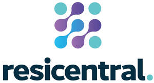
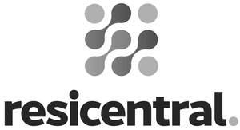

Trade Mark Journal No.2025/030 25 July 2025
UK00004235415 17 July 2025 (9,11,35,36,37,42,45)
Mark 1
Mark 2

Mark 3
Mark 4
Mark 5

Mark 6
- Class 9
- Scientific, research, navigation, surveying, photographic, cinematographic, audiovisual, optical, weighing, measuring, signalling, detecting, testing, inspecting, life-saving and teaching apparatus and instruments; apparatus and instruments for conducting, switching, transforming, accumulating, regulating or controlling the distribution or use of electricity; surveying instruments; sensors, detectors and monitoring instruments; building management software; computer hardware and computer software relating to residential and commercial property and building automation systems and devices; computer application software (apps) relating to residential and commercial property and building automation systems and devices; residential and commercial property and building automation systems comprising wireless and wired controllers, controlled devices and software, for lighting, heating, humidity, air quality, air pressure, noise level, sensing aspirated particles, energy, security, safety and other monitoring and control applications; computer software, equipment and sensors for monitoring, detecting and / or controlling light, temperature, humidity, air quality, air pressure, noise level, aspirated particles, energy and occupancy; computer software, equipment and sensors for the security of buildings; computer software and computer application software (apps) for smart homes; computer software and computer application software (apps) for building management; computer software and computer application software (apps) relating to energy usage and energy monitoring; devices relating to energy usage and energy monitoring; computer software and computer application software (apps) for remote diagnostics; computer software and computer application software (apps) for controlling security equipment; computer software and computer application software (apps) for window and door opening and closing sensors; residential and commercial automation devices; residential and commercial automation hubs; electric control devices for energy management; alarms; alarm systems; boiler and pump control instruments; thermostatically controlled valves; electrical controlling devices; smart plugs; remote control telemetering apparatus; data processing equipment; electrical contacts; electric relays; computer storage devices; computer peripherals; portable recorders; recorded and downloadable media, computer software, blank digital or analogue recording and storage media; downloadable computer application software; downloadable audio, visual, and audiovisual files and recordings, featuring multimedia content; online electronic publications (downloadable from the Internet or a computer network or a computer database); communications software for electronically exchanging data, audio, video, images and graphics via computer, mobile, wireless, and telecommunication networks; measuring devices; electrical measuring instruments; remote control apparatus; thermostats; thermostatic devices; ventilation equipment and devices (air conditioning); fire-extinguishing equipment; air quality sensors; alarm sensors; electric smoke detectors; gas sensors; temperature sensors; heat detecting apparatus; fire detectors; leak detection apparatus; smoke detection apparatus; water leakage detection alarms; parts and fittings for all the aforesaid goods.
- Class 11
- Apparatus and controls for lighting, heating, steam generating, cooking, refrigerating, drying, ventilating, water supply and sanitary installations; air treatment and air purification apparatus and equipment; deodorizing apparatus; air purifying installations, devices and machines; filters for air treatment and / or air purification; commercial and industrial dehumidifiers; HVAC systems [heating, ventilation and air conditioning]; thermostatic valves being parts of HVAC systems [heating, ventilation and air conditioning]; heat-recovery installations; air cooling apparatus; electric fans; regulating and safety accessories for water and gas installations; light bulbs, lighting fixtures, lighting strips, and lamps; electric space heaters, air conditioners, and electric fans; water supply equipment adjustment and safety accessories; water purification equipment and machinery; water control valves; electric heating devices; heating devices; electric heaters; radiators; thermostatic radiator valves (TRV); water purification devices; parts and fittings for all the aforesaid goods.
- Class 35
- Business consultancy services; business efficiency and promotional services; business strategy development services; business appraisals, investigations and auditing; business management; business administration; business information services; online business information services; compilation and provision of business or trade information; business data analysis; cost benefit analysis; business research; business data research; monitoring services for businesses; assistance, advisory services and consultancy relating to business management and business operations; data processing; preparation of reports relating to smart technology; analysing and compiling data; provision of business statistical information; compilation and analysis of statistical information; planning, conducting and organisation of trade fairs, exhibitions, seminars and presentations for business or promotional purposes; information distribution services; retail services, online retail services and wholesale services connected with the sale of sensors, detectors, monitoring instruments, computer hardware and software, computer hardware and software relating to home and building automation systems and devices, apparatus and controls for lighting, heating, steam generating, cooking, refrigerating, drying, ventilating, water supply and sanitary installations; advisory, information and consultancy services relating to all of the aforementioned services.
- Class 36
- Property management services; real estate management services; building management services; advisory, information and consultancy services relating to all of the aforesaid services.
- Class 37
- Installation, repair, maintenance and upgrading of residential and commercial automation hubs and automation systems; installation, repair, maintenance and upgrading of computer hardware; installation, repair, maintenance and upgrading of technology and equipment for smart homes and buildings; installation, repair, maintenance and upgrading of residential and commercial automation hubs automation hubs; advisory, information and consultancy services relating to the aforementioned services.
- Class 42
- Scientific and technological services; computer software design and development; computer application software design and development; computer hardware design and development; computer programming; installation, maintenance, monitoring, repair and upgrading of computer software and computer application software; computerised analysis of data; technological data analysis; testing and analysis services; product evaluation services; quality control services; providing temporary access to non-downloadable software; website hosting, creation, design, development and maintenance; intranet and portal design, development and maintenance; design services; electronic data storage; software as a service [SaaS]; software as a service [SaaS] featuring building management software; software as a service [SaaS] featuring smart home and smart building software; software as a service [SaaS] in the field of smart technology and energy efficiency; providing technical information, advice and consultancy; electronic data collection in the nature of electronic quality control for others, monitoring and reporting of commercial and residential structures and systems, namely, lighting, heating, humidity, air quality, air pressure, noise level, sensing aspirated particles, energy, security and safety using computers and sensors; advisory, information and consultancy services relating to the aforementioned services.
- Class 45
- Security monitoring services; surveillance services; concierge services; building concierge services; hotel concierge services; information and consultancy services relating to the aforementioned services.
Resicentral Limited
Representative: Ward Hadaway LLP